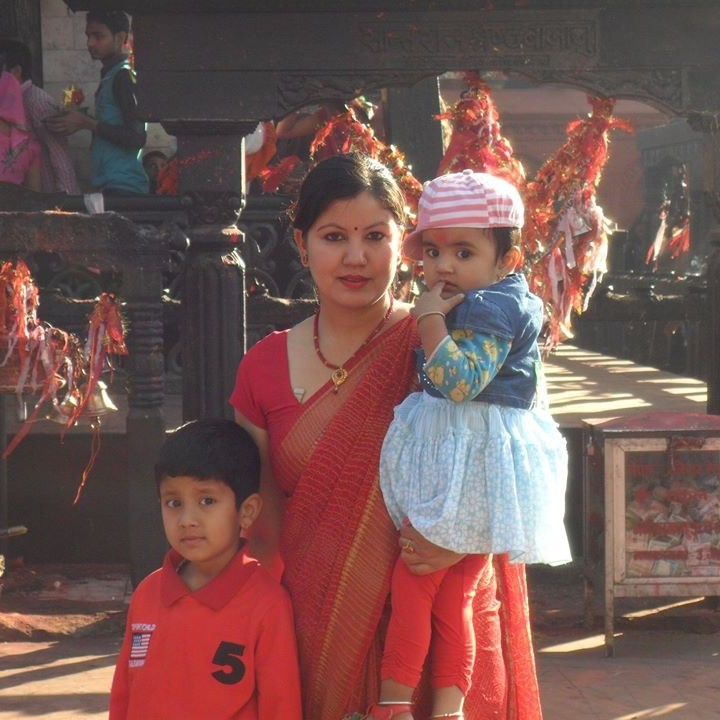
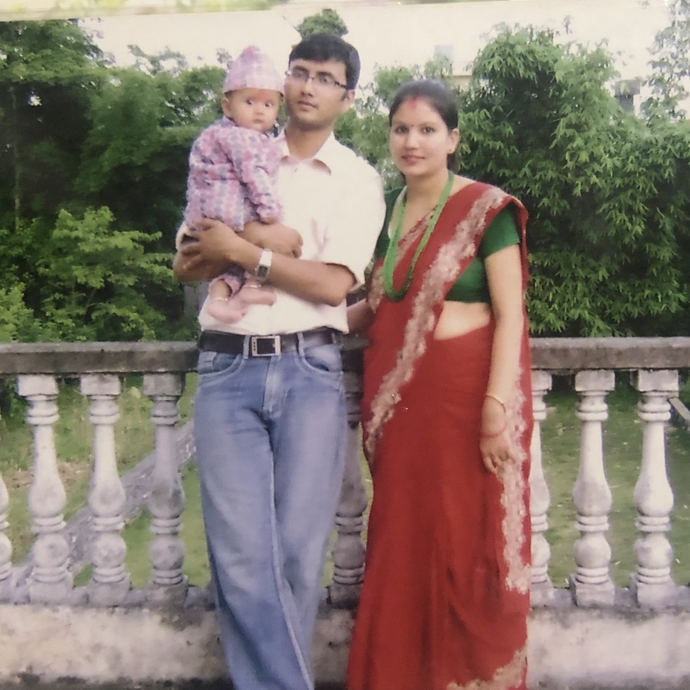

— A Journey Through Time —
Prasanna
From where I came, to where I stand, to where the stars may lead
Chronicles
Past Experiences
Early Years
Roots in Pokhara
Grew up in the unexpected weather of Pokhara — a city that taught me beauty lives in the unexpected. The Himalayas as a backdrop, the chaos of Fewa as a playground.
School Years
Academic Foundations
Discovered a love for problem-solving and creative thinking. Science fairs to fictional stories like Percy Jackson shaped a curious mind that questions everything.
First Steps
Early Work & Projects
First forays into real-world work — internships, side projects, and the occasional failure that taught more than any classroom. Learning that competence is just persistence made visible.
Recent Past
Growth & Exploration
Broadened horizons through travel, new skills, and deliberate discomfort. Discovered that identity is not fixed — it is chosen, and chosen again, each morning.






Constellations
People of My Past
Baba
family · inspiration
The quiet strength behind every decision. A presence that showed me what dignity and work ethic look like in daily life — without ever needing to say so.
Mummy
family · foundation
Her warmth is the first thing I remember and the last thing I hold onto when things get hard. The original reason I believe people are fundamentally good.
Sister
family · confidante
We grew up sharing the same walls and eventually the same sense of humour. The kind of bond that survives distance and silence without explanation.